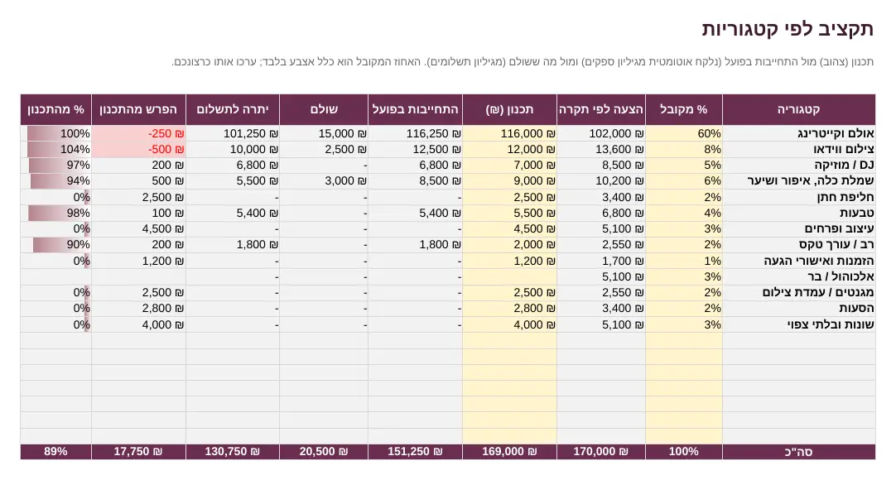
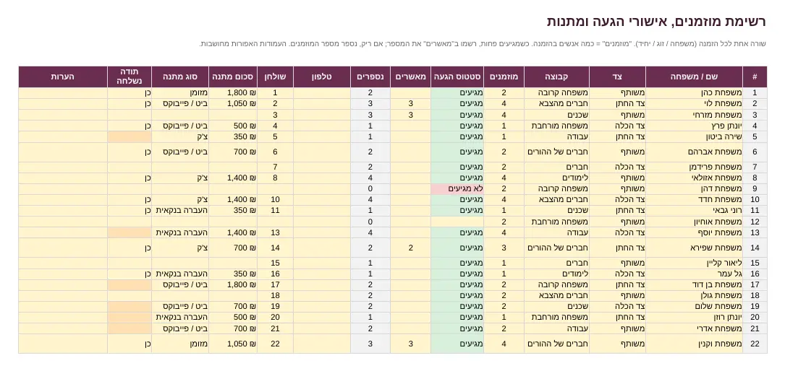
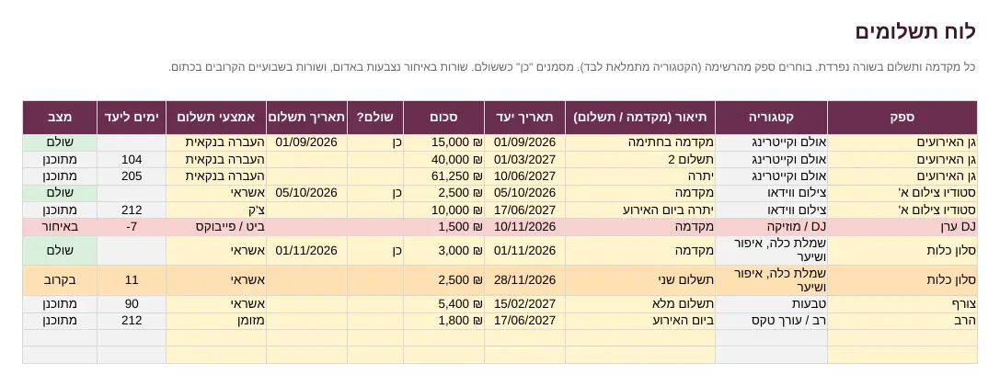
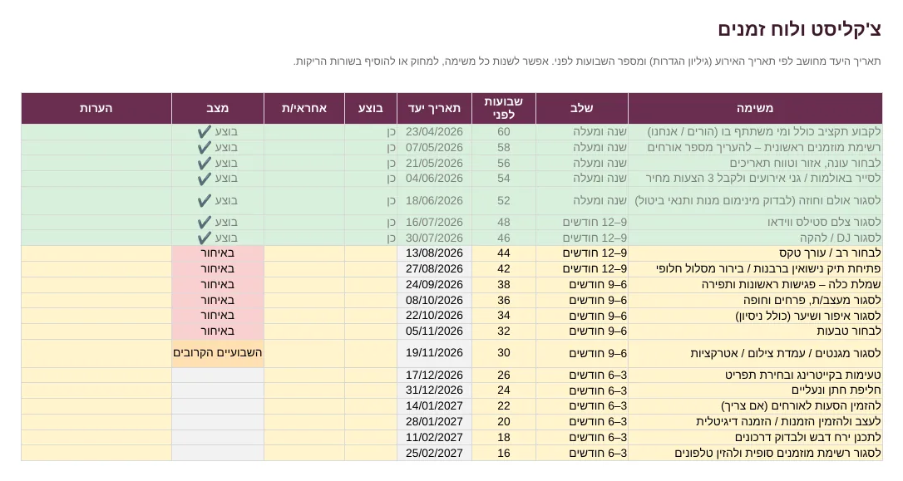
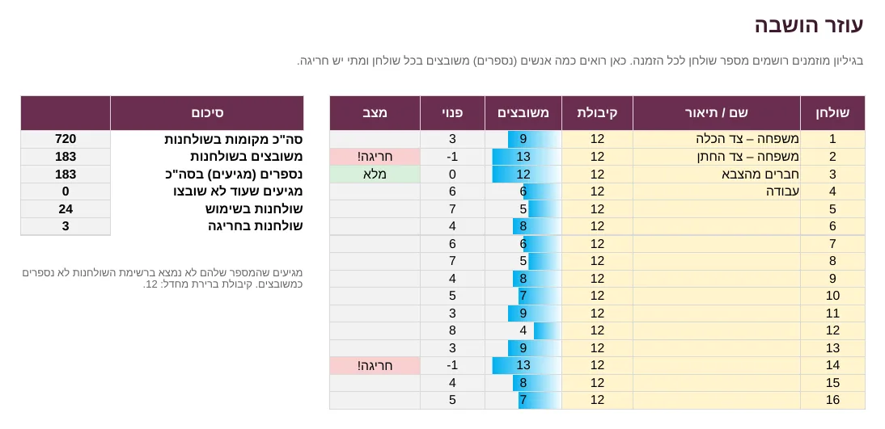

מתכנן חתונה באקסל: כל החתונה בקובץ אחד
תקציב, מוזמנים, צ'קים, ספקים ותשלומים – קובץ אקסל / Google Sheets אחד בעברית שמסדר את כל החתונה.
- עברית מלאה, מימין לשמאל
- עובד גם ב-Google Sheets
- בלי מאקרו
- קובץ דוגמה ממולא
תקציב, ספקים ותשלומים, רשימת מוזמנים עם אישורי הגעה, רישום צ'קים ותודות, צ'קליסט והושבה. ממלאים פעם אחת, והדשבורד מראה בכל רגע כמה התחייבתם, כמה שילמתם, מי עוד לא אישר הגעה – והאם המתנות יכסו את האירוע.
אקסל + Google Sheets · ₪49 · הורדה מיידית · צילומי מסך ↓ · מה בפנים ↓
ככה זה נראה
צילומי מסך מקובץ הדוגמה הממולא שמגיע עם המוצר (שמות ונתונים בדויים).






מה מקבלים
9 גיליונות מחוברים זה לזה: מה שמעדכנים במקום אחד מתעדכן בכל השאר.
דשבורד חי
ימים לחתונה, תקציב מתוכנן מול התחייבויות, שולם ויתרה, תשלומים באיחור ובשבועיים הקרובים, שיעור אישורי הגעה ומאזן מתנות.
תקציב לפי 13 קטגוריות
עם חלוקה מקובלת לפי תקרת התקציב שלכם, תכנון מול התחייבות בפועל, והתראה באדום על חריגה.
מוזמנים ואישורי הגעה
שורה לכל הזמנה, לפי צד וקבוצה, סטטוס הגעה ומספר מאשרים. עד 400 הזמנות, עם סינון.
רישום צ'קים ומתנות
סכום וסוג המתנה (צ'ק, ביט, העברה), וסימון כתום עד ששולחים תודה. ממוצע מתנה לאורח מחושב לבד.
ספקים ולוח תשלומים
הצעות מחיר, מחיר סופי, מקדמות ויתרות עם תאריכי יעד. איחורים נצבעים באדום.
צ'קליסט של 38 משימות
מכ-14 חודשים לפני ועד אחרי החתונה, עם תאריכי יעד שמחושבים אוטומטית מתאריך האירוע.
עוזר הושבה
מספר שולחן לכל הזמנה, ותמונת תפוסה לכל שולחן כולל חריגות ומי עוד לא שובץ.
נוסחים מוכנים (Word)
שמרו את התאריך, בקשת אישור הגעה, תזכורת יום לפני והודעות תודה, לוח זמנים ליום החתונה וצ'קליסט להדפסה.
איך זה עובד
קונים ומורידים
תשלום ב-PayPal, ומיד אחריו עמוד הורדה עם כל הקבצים.
ממלאים הגדרות
תאריך, מחיר מנה ותקציב – 5 דקות, והכל מתחבר.
מעדכנים תוך כדי
ספקים, תשלומים, אישורי הגעה ומתנות. הדשבורד מתעדכן לבד.
למי זה מתאים?
לזוגות שמתחתנים ב-2026–2027 ורוצים סדר בלי אפליקציה ובלי מנוי: קובץ אחד שאפשר לשתף עם בן/בת הזוג וההורים. מתאים לחתונה של 80 אורחים וגם של 400, באולם, בגן או באירוע צנוע.
שאלות נפוצות
מה ההבדל בין זה לבין טבלה שאני בונה לבד?
הכל כבר מחובר: ספק שסוגרים נכנס לתקציב, תשלום שמסמנים מעדכן את היתרה, אישור הגעה משנה את מספר המנות וההושבה, ומתנה שנרשמת מעדכנת את המאזן. בנוסף יש צ'קליסט עם תאריכים אוטומטיים ונוסחים מוכנים.
אפשר לשנות את הקטגוריות והרשימות?
כן. בגיליון "הגדרות" אפשר לערוך ולהוסיף קטגוריות תקציב, צדדים, קבוצות מוזמנים ואמצעי תשלום, והם מופיעים בכל הרשימות הנפתחות.
כמה מוזמנים הקובץ תומך?
עד 400 שורות הזמנה (כל שורה יכולה להיות משפחה שלמה), 80 ספקים, 150 תשלומים ו-60 שולחנות.
זה עובד ב-Google Sheets?
כן. הקובץ נבנה בלי מאקרו ובלי פונקציות שקיימות רק באקסל, כדי שיעבוד גם ב-Google Sheets: מעלים ל-Google Drive ופותחים עם Google Sheets. ייתכנו הבדלים קטנים בעיצוב ובגרפים. כך אפשר לעבוד עליו יחד מכמה טלפונים.
יש פקודות מאקרו? צריך להתקין משהו?
לא. רק נוסחאות רגילות של Excel, בלי מאקרו ובלי תוספים. עובד ב-Excel 2016 ומעלה, Excel 365, Excel לטלפון, Google Sheets ו-LibreOffice.
אפשר לקבל החזר?
מדובר במוצר דיגיטלי שמועבר מיד להורדה. פרטים מלאים במדיניות הביטולים. אם משהו בקובץ לא עובד – נתקן.
זה כולל ייעוץ או המלצה פיננסית?
לא. אחוזי החלוקה וסכומי הדוגמה הם כללי אצבע להתמצאות. המחירים בפועל תלויים בספקים, באזור ובעונה.
חבילת אירועים: חתונה + בר/בת מצווה
שני המתכננים המלאים ב-₪69 במקום ₪88. מתאים למשפחות עם כמה שמחות בדרך.
מדריכים ומחשבונים חינם
- מחשבון: כמה לשים בחתונה 2026
- תקציב חתונה 2026: איך מחלקים ומה באמת עולה
- אישורי הגעה, הושבה ורישום צ'קים – שיטה מסודרת
- צ'קליסט חתונה: מה סוגרים ומתי
- רשימת מוזמנים לחתונה: איך בונים ומצמצמים
- איך לחסוך בחתונה
- חוזה עם אולם וספקים: מה לבדוק
- מעצב הזמנות לחתונה אונליין (תצוגה חינם, ₪19 להורדה) · נוסח הזמנה לחתונה
- כלי סידורי הושבה אונליין (חינם לשימוש) – אפשר להדביק אליו את רשימת המוזמנים מהקובץ
- מתכנן בר / בת מצווה (₪39)
- רשימת מוזמנים ואישורי הגעה – ייבוא אנשי קשר, תזכורת בוואטסאפ בלחיצה והעברה להושבה. חינם עד 80 הזמנות
- חבילת החתונה ב-₪79 – מתכנן, אישורי הגעה, הושבה והזמנה במקום ₪126
כל הכלים והמדריכים לחתונה, לאורחים ולזוגות: הכל לחתונה ←